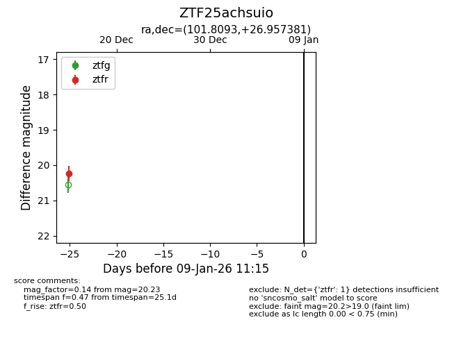
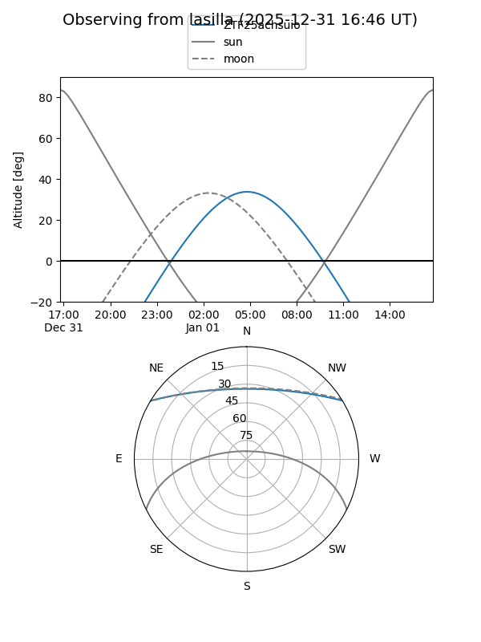
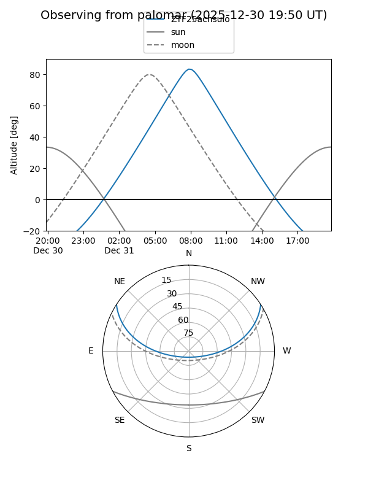

ZTF25achsuio
Target ZTF25achsuio at 2025-12-31 16:59
Aliases and brokers:
FINK:
Lasair:
ALeRCE:
alt names
ZTF25achsuio (ztf,fink_ztf)
Coordinates:
equatorial (ra, dec) = 101.8093,+26.95738
equatorial (HMS+DMS) = 06:47:14.24,+26:57:26.57
galactic (l, b) = (188.1788,+11.07951)
Flags:
Photometry:
last ztfr=20.23
1 ztfr detections
Lightcurve

Visibility


Additional plots